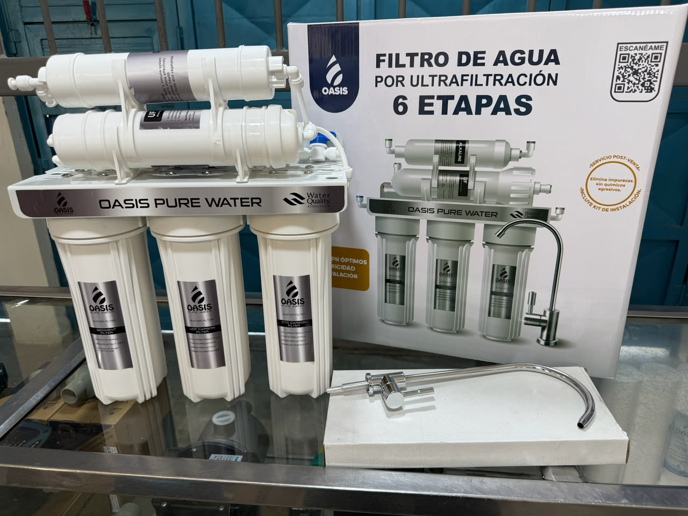
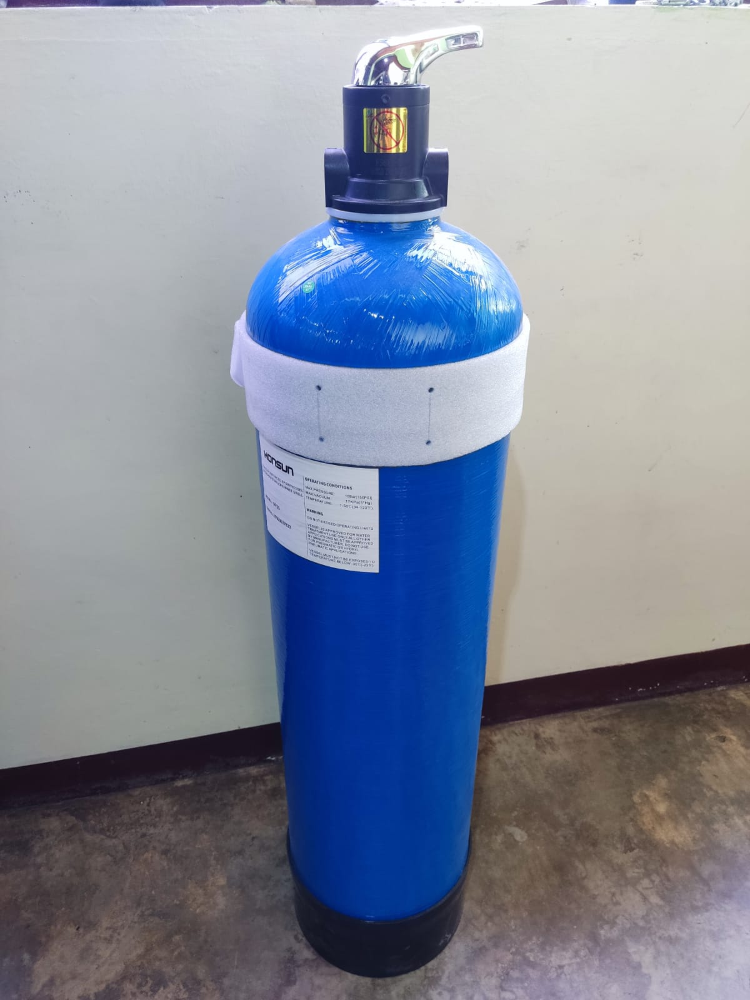
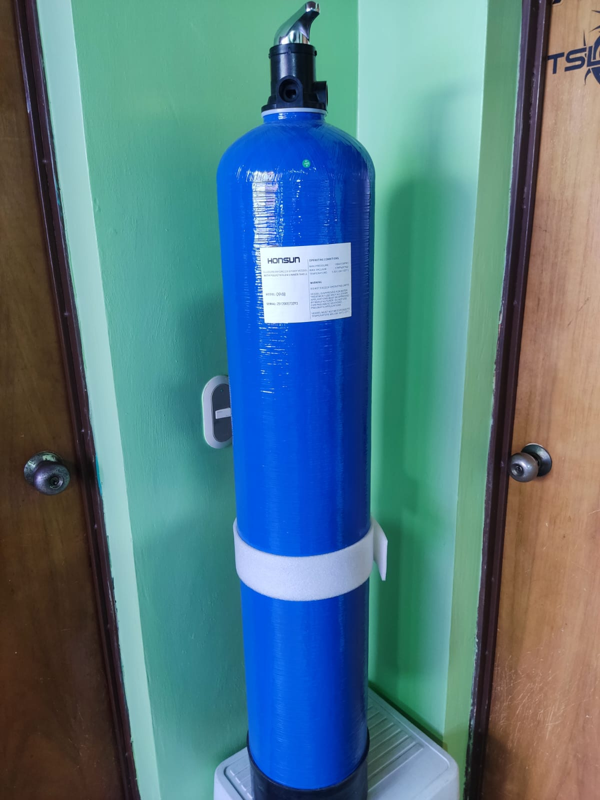

Inicio
Catálogo
Contáctanos
Volver al Catálogo
Catálogo: Filtros

Filtro de Agua por Ultrafiltración OASIS
Modelo: 6 Etapas (OASIS PURE WATER)
Ver características
Tecnología:
Ultrafiltración (UF)
Niveles de Purificación:
6 Etapas
Beneficios:
Elimina impurezas sin químicos agresivos
Etapas Inferiores:
Sedimentos y Carbón Activo (CTO/UDF)
Etapa Superior:
Filtro Alcalino (Alkaline)
Incluye:
Kit de instalación completo y grifo cuello de cisne
Certificación:
Water Quality Association
Consultar precio

Tanque de Fibra de Vidrio (FRP) HONSUN
Modelo: 0935
Ver características
Material:
Fibra de vidrio con interior de polietileno
Presión Máx:
10 Bar (150 PSI)
Vacío Máx:
17 KPa (5" Hg)
Temperatura:
1 - 50 °C (34 - 122 °F)
Uso:
Tanque para tratamiento de agua
Consultar precio

Tanque de Fibra de Vidrio (FRP) HONSUN
Modelo: 0948
Ver características
Material:
Fibra de vidrio con interior de polietileno
Presión Máx:
10 Bar (150 PSI)
Vacío Máx:
17 KPa (5" Hg)
Temperatura:
1 - 50 °C (34 - 122 °F)
Uso:
Tanque para tratamiento de agua
Consultar precio